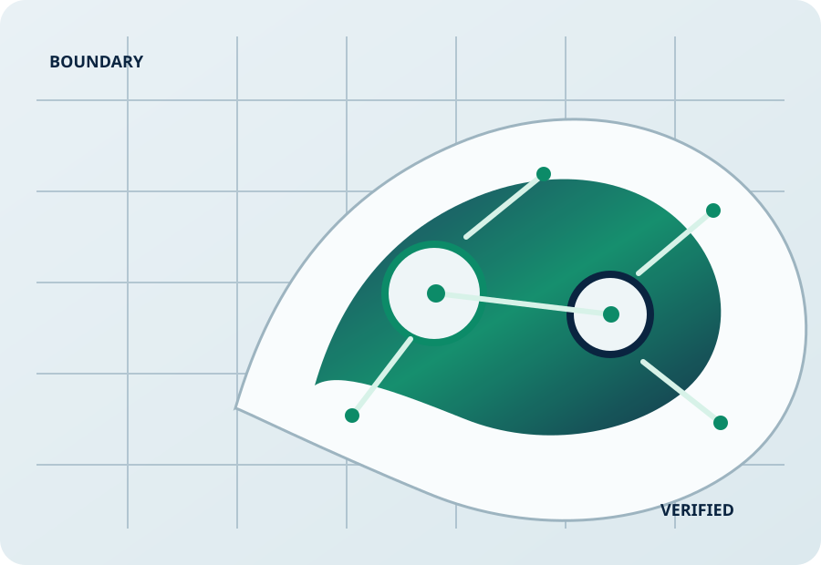

Send the problem
Provide the engineering question, inputs, constraints and available data.
UK-BASED · EVIDENCE-LED · STABILITY-FIRST
Bounded, reproducible simulation implementation and verification with documented assumptions, sensitivity studies, source and results.

HOW IT WORKS
Provide the engineering question, inputs, constraints and available data.
SPRE defines assumptions, model boundaries, acceptance criteria and exclusions before work begins.
The bounded model is implemented, checked independently and exercised across agreed scenarios.
You receive results, plots, assumptions, limitations and reproducible source/results where agreed.
SERVICES
Turn a bounded engineering specification into an auditable simulation model.
Explore controlled design variables and compare outcomes across defined operating ranges.
Check numerical behaviour, edge cases, tolerances and sensitivity to assumptions.
TRUTH BOUNDARY
SPRE does not present simulation output as physical validation, certification, safety approval or production sign-off unless separate evidence actually establishes it.
Assumptions · model scope · verification · scenarios · results · limitations
PRE-LIVE
This page is a controlled design baseline while SPRE completes staging, security, legal and payment qualification.